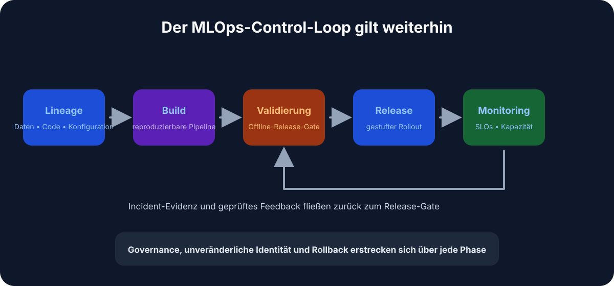
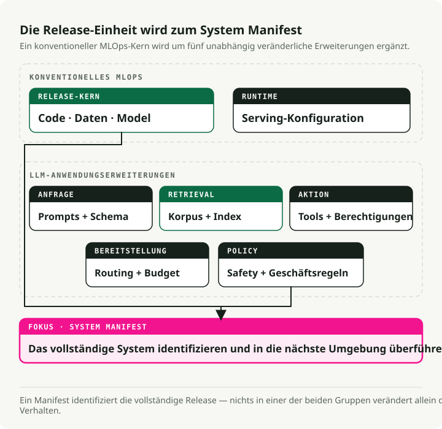
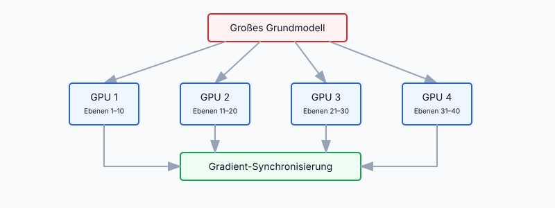
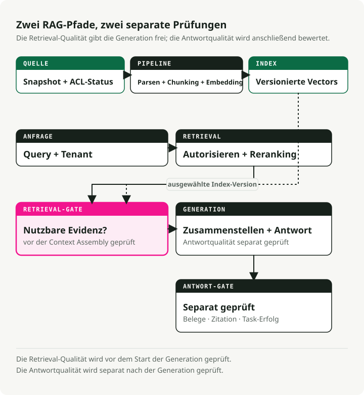
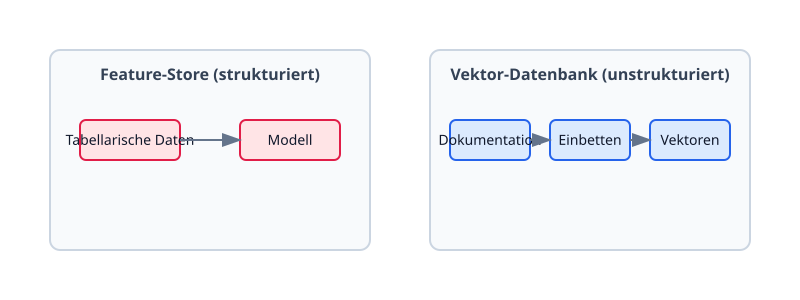
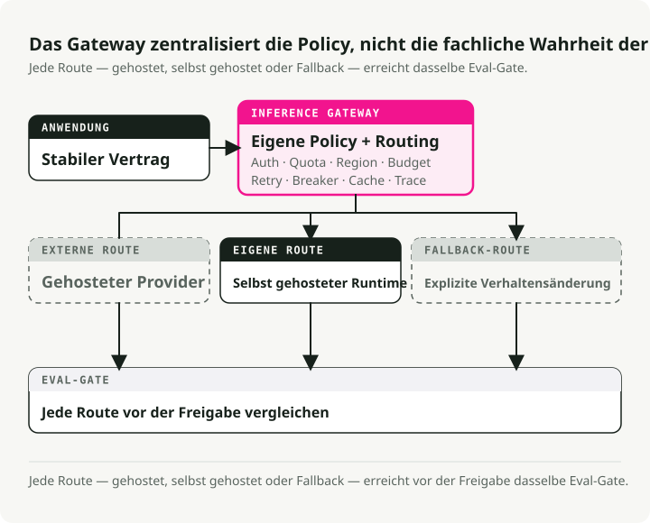
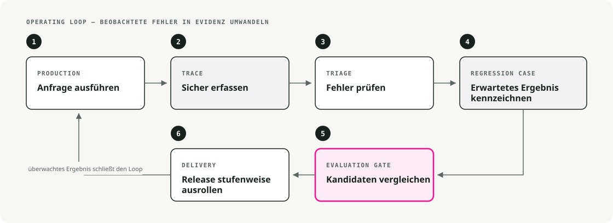

Automatische Übersetzung
Dieser Artikel wurde automatisch aus der englischen Originalversion übersetzt.
MLOps vs. LLMOps: Infrastruktur für Foundation Models und LLM-Systeme
Foundation Models haben die meisten Annahmen aufgebrochen, auf denen klassisches MLOps aufgebaut war. Das hier ist ein Überblick darüber, was sich geändert hat, was geblieben ist und welche Muster die Lücke gefüllt haben.
Klassisches MLOps vor Foundation Models
Vor ein paar Jahren bedeutete MLOps meist DevOps für ML — den Lebenszyklus von der Datenaufbereitung über Deployment bis zum Monitoring zu automatisieren. Modelle waren klein genug, um sie von Grund auf mit Domänendaten zu trainieren, und die Infrastruktur spiegelte das wider.

1.1. End-to-End-Pipelines
Teams bauten Pipelines für Datenextraktion, Training, Validierung und Deployment. Airflow übernahm ETL und die Orchestrierung des Trainings. CI/CD führte Tests aus und brachte Modelle in Produktion. Modelle wurden als Docker-Container ausgeliefert, die REST-Endpunkte oder Batch-Jobs bedienten. Ziel des Ganzen waren Reproduzierbarkeit und Automatisierung.
1.2. Experiment-Tracking und Modellversionierung
MLflow und Weights & Biases waren der Standard für das Logging von Runs, Hyperparametern und Metriken. Data Scientists konnten Experimente vergleichen und Ergebnisse zuverlässig reproduzieren. Modell-Registries gaben Versionsnummern, was Rollbacks einfach machte, wenn ein neues Modell schlechter performte.
1.3. Kontinuierliches Training & CI/CD
Pipelines waren auf die kontinuierliche Integration neuer Daten ausgelegt. Ein typisches Setup trainierte jede Nacht oder jede Woche neu, sobald neue Daten eintrafen, ließ eine Test-Suite laufen und deployte automatisch, wenn alles bestand. Jenkins und GitLab CI/CD stellten sicher, dass jede Änderung an Daten oder Code die Pipeline zuverlässig auslöste.
1.4. Infrastruktur und Serving
Serving hatte einen relativ kleinen Footprint — ein paar CPU-Kerne oder eine einzelne GPU für Echtzeit-Inferenz. Kubernetes und Docker waren der Standard für skalierbare Inferenz-Services. Monitoring deckte drei Dinge ab: Performance-Metriken (Latenz, Durchsatz, Speicher), Modellmetriken (Accuracy, Drift) und Systemzustand (Uptime, Fehlerraten).
1.5. Feature Stores und Datenmanagement
Für Finance und E-Commerce waren modellierte Features genauso wichtig wie das Modell selbst. Feature Stores gaben einen zentralen Ort, um sie zu verwalten, und hielten Training und Serving konsistent. Strukturierte Daten und Feature Engineering waren das Zentrum der Architektur. Unstrukturierte Daten — Text, Bilder — wurden separat außerhalb dieser Stores behandelt.
Dieses Setup funktionierte gut, bis Modelle deutlich größer wurden.
2. Der Paradigmenwechsel: der Aufstieg großskaliger Foundation Models
Zwischen 2018 und 2020 änderte sich das Bild schnell. Forschende begannen, Foundation Models zu veröffentlichen — sehr große Modelle, die auf breiten Korpora vortrainiert wurden und sich für viele Aufgaben anpassen ließen.
Die Entwicklung war schnell:
- 2018–2019: BERT und GPT-2 machten Transfer Learning im großen Maßstab glaubwürdig.
- 2020–2021: GPT-3 und PaLM zeigten, was reine Skalierung leisten kann.
- 2021–2023: Bildmodelle wie DALL-E und Stable Diffusion machten generative AI massentauglich.
- 2023–2024: Foundation Models wurden zur Standard-Infrastruktur — verfügbar auf Hugging Face, AWS Bedrock, Vertex AI Model Garden und direkt von API-Anbietern.

Hier ist, was Foundation Models an der ML-Infrastruktur tatsächlich verändert haben.
2.1. Vortrainiert schlägt Training von Grund auf
Statt von Grund auf zu trainieren, starteten Teams mit einem vortrainierten Modell und fine-tunten es für die jeweilige Aufgabe. Die Trainingszeit sank von Wochen auf Stunden. Der Datenbedarf fiel von Millionen Beispielen auf Tausende. Kleinere Teams konnten ernsthafte AI-Produkte ausliefern, ohne eine eigene Forschungsorganisation im Rücken zu haben.
Die größten Modelle (Milliarden Parameter) werden meist unverändert per API genutzt oder mit leichten Adaptern fine-getunt. Das Anforderungsprofil verschob sich: weniger „wie baue ich ein Modell?“ und mehr „wie nutze und integriere ich eines?“
2.2. Modellgröße und Rechenanforderungen
Im LLM-Maßstab muss sich auch der Rest des Stacks ändern. Ein Modell mit 175B Parametern ist nicht einfach nur ein größeres mit 50M — es passt nicht auf dieselbe Hardware, wird nicht auf dieselbe Weise trainiert und auch nicht auf dieselbe Weise serviert.
Die Hauptprobleme:
- Training benötigt leistungsstarke Hardware (GPUs, TPUs) und verteiltes Compute.
- Model Parallelism shardet ein einzelnes Modell über mehrere GPUs.
- Data Parallelism synchronisiert viele GPU-Worker während des Trainings.
- Inference benötigt oft mehrere GPUs oder spezialisierte Runtimes, um die Latenz im Rahmen zu halten.
DeepSpeed und ZeRO (Zero Redundancy Optimizer) wurden speziell eingeführt, um das Training riesiger Modelle praktikabel zu machen. Die Infrastruktur-Anforderungen stiegen um Größenordnungen.
2.3. Das Entstehen von LLMOps
Diese Modelle in Produktion zu betreiben, brauchte Erweiterungen des klassischen MLOps. Daraus entstand LLMOps — auf große Modelle spezialisiertes MLOps, mit denselben Prinzipien, aber einer anderen Problemoberfläche:
- Compute: Management teurer GPU-Cluster statt CPU-Pools.
- Prompt Engineering: Verhalten über das Design der Eingaben steuern.
- Safety Monitoring: Bias, schädliche Inhalte und Datenlecks erkennen.
- Performance Management: Latenz, Qualität und Kosten pro Token ausbalancieren.
Probleme, die bei kleineren Modellen kaum auffielen — verzerrte Texte, geleakte Trainingsdaten — wurden im LLM-Maßstab zu realen Risiken.

NVIDIAs Diagramm zeigt gut, wie diese Spezialisierungen ineinandergreifen: außen klassisches MLOps, dann GenAI Ops (jedes generative Modell), dann LLMOps (spezifisch für große Sprachmodelle), dann RAGOps für retrieval-augmentierte Systeme. Der Punkt dieser Verschachtelung ist, dass jede innere Ebene auf den Praktiken der äußeren aufbaut — sie ersetzt sie nicht.
2.4. Foundation Models as a Service
Die andere große Veränderung: Viele Anwendungen hosten ihre eigenen Modelle nicht mehr, sondern rufen die Modelle anderer Anbieter auf. OpenAI, Cohere und AI21 Labs bieten gehostete LLMs an. Google Vertex AI liefert einen Model Garden mit vortrainierten Modellen. AWS Bedrock hostet proprietäre Foundation Models. Hugging Face hostet Tausende offener Weights, die man abrufen oder in der Cloud ausführen kann.
Das ordnet die Architektur neu. Produktionspipelines rufen für Inferenz externe APIs auf. Das spart GPU-Management, bringt aber neue Kosten mit sich:
- Latenz: Netzwerk-Round-Trips erzeugen zusätzlichen Overhead.
- Kosten: Pay-per-Token-Preise schlagen bei Lastspitzen direkt auf die Rechnung durch.
- Datenschutz: Alles, was an einen Anbieter gesendet wird, verlässt den eigenen Perimeter.
- Vendor Lock-in: API-Verhalten, Preise und Richtlinien liegen nicht in der eigenen Kontrolle.
Für die meisten Teams funktioniert dieser Trade-off. Einen eigenen LLM-Serving-Stack zu betreiben, ist ein ernsthaftes Engineering-Investment — und nicht immer eines, das man eingehen will.
3. Neue Anforderungen und Fähigkeiten in moderner ML-Infrastruktur
Moderne ML-Infrastruktur muss Dinge unterstützen, die vor ein paar Jahren noch Nischen oder gar nicht existent waren. Die wichtigsten:
3.1. Verteiltes Training und Model Parallelism
Das Training eines Modells mit Milliarden Parametern liegt jenseits der Kapazität einer einzelnen Maschine. Moderne Infrastruktur orchestriert das Training über viele Nodes hinweg:

Zwei zentrale Aufteilungen sind wichtig:
- Model Parallelism: Teile die Layer des Modells auf GPUs auf (jede GPU berechnet einen Teil des Forward Pass).
- Data Parallelism: Repliziere das Modell über GPUs hinweg, teile die Trainingsdaten auf und synchronisiere anschließend die Gradienten.
PyTorch Lightning und Horovod übernehmen allgemeines verteiltes Training. NVIDIAs Megatron-LM ist die erste Wahl für massive Transformer. Googles JAX/TPU-Stack deckt TPU-Cluster ab.
Vor ein paar Jahren trainierten die meisten Teams auf einem einzelnen Server. Heute starten ML-Plattformen Jobs auf GPU-Clustern, managen Fehlerfälle und aggregieren Gradienten von Dutzenden oder Hunderten Workern, ohne dass die Engineeringschicht darüber nachdenken muss.
3.2. Effiziente Fine-Tuning-Techniken
Selbst das Fine-Tuning eines Modells mit mehreren Milliarden Parametern kann teuer sein. Genau dafür gibt es parameter-effiziente Methoden:
- LoRA (Low-Rank Adaptation): Trainiere nur einen kleinen Satz Adapter-Parameter; die Basis-Weights bleiben eingefroren. Compute- und Speicherbedarf sinken stark.
- Prompt Tuning: Optimiere nur die Prompt-Embeddings; das Modell selbst bleibt eingefroren.
- Adapter-Module: Füge kleine trainierbare Layer zwischen eingefrorene Layer ein.
LoRA mit peft konfigurieren:
from peft import LoraConfig, get_peft_model
# Configure LoRA
peft_config = LoraConfig(
r=16,
lora_alpha=32,
target_modules=["q_proj", "v_proj"],
lora_dropout=0.05,
bias="none",
task_type="CAUSAL_LM"
)
# Apply to base model
model = get_peft_model(base_model, peft_config)
model.print_trainable_parameters()
Die Infrastruktur muss den mehrstufigen Workflow unterstützen: ein Basismodell aus einem Hub holen, fine-getunte Weight-Deltas anwenden und das kombinierte Ergebnis deployen. Traditionelle Pipelines mussten sich weiterentwickeln, um diesen Customization-Schritt abzubilden.
3.3. Prompt Engineering & Management
Das neue Artefakt in modernen ML-Pipelines ist der Prompt. Bei LLMs steuert der Prompt einen großen Teil dessen, was das Modell tut — deutlich mehr, als Feature-Vektoren das je im klassischen ML taten.
Das hat praktische Folgen. Teams pflegen heute Prompt-Bibliotheken, versionieren sie wie Code, führen A/B-Tests mit Varianten durch und speichern Prompt-Versionen neben Modellversionen in der Registry. Das ist wirklich anders als klassisches ML, wo Eingaben einfach Feature-Vektoren waren. Frameworks wie LangChain behandeln Prompt-Optimierung als First-Class-Feature.
Eine einfache Entwicklung sieht so aus:
v1: "Classify this text as positive or negative: {text}"
v2: "You are a sentiment analyzer. Classify: {text}"
v3: "Analyze sentiment. Return only 'positive' or 'negative': {text}"
Jede Version erzeugt andere Ergebnisse. Prompts zu tracken und zu testen wird am Ende genauso wichtig wie das Tracking von Modell-Weights.
3.4. Retrieval-Augmented Generation (RAG)
Foundation Models haben einen festen Knowledge Cutoff und ein begrenztes Context Window. Um Antworten aktuell und belastbar zu halten, ist Retrieval-Augmented Generation (RAG) zur Standardpraxis geworden.

Statt ein Modell ständig auf neuen Daten neu zu trainieren — was langsam und teuer ist — holt RAG zur Anfragezeit relevante Dokumente und hängt sie als Kontext an den Prompt an.
Eine vereinfachte RAG-Chain in LangChain:
from langchain.vectorstores import Pinecone
from langchain.llms import OpenAI
from langchain.chains import RetrievalQA
# 1. Load the vector database
vector_db = Pinecone.from_existing_index("my-index", embeddings)
# 2. Initialize the LLM
llm = OpenAI(temperature=0)
# 3. Create the RAG chain
qa_chain = RetrievalQA.from_chain_type(
llm=llm,
chain_type="stuff",
retriever=vector_db.as_retriever()
)
# 4. Ask a question
response = qa_chain.run("How does LLMOps differ from MLOps?")
Die neuen Infrastruktur-Bausteine:
- Vektor-Datenbanken (Pinecone, Weaviate, FAISS, Milvus) für schnelle Similarity Search über Embeddings.
- Embedding-Modelle, um Dokumente und Anfragen in Vektoren umzuwandeln.
- Index-Management, um Embeddings mit der Source of Truth synchron zu halten.
Vektor-Datenbanken haben die Rolle traditioneller Feature Stores weitgehend übernommen. Unstrukturierte Daten und semantische Suche sind heute der Schwerpunkt, nicht manuelles Feature Engineering.
3.5. Daten-Streaming und Echtzeit-Datenfeeds
Moderne Anwendungen — besonders LLM-basierte Assistenten — ingestieren Daten kontinuierlich: Chat-Verläufe, Sensordaten, Event Streams. Diese Daten müssen Modellwissen aktualisieren (über RAG) oder live Reaktionen auslösen.
Klassisches MLOps war batch-orientiert (tägliches oder wöchentliches Retraining). Modernes LLMOps ist eher stream-orientiert: Kafka und Event-Streaming-Plattformen, Echtzeit-Datenbanken (Redis, DynamoDB), Online-Feature-Stores mit kontinuierlichen Updates und Streaming-Embedding-Pipelines, die Vektorindizes aktuell halten.
Die Grenze zwischen Data Engineering und MLOps ist unscharf geworden. Datenpipelines speisen heute Inferenz direkt, nicht nur Training.
3.6. Skalierbare und spezialisierte Serving-Infrastruktur
Ein massives Modell zu servieren, ist ein eigenes Engineering-Projekt. Drei Fähigkeiten sind besonders wichtig.
Serving mit hohem Durchsatz und niedriger Latenz. Interaktive Anwendungen brauchen schnelle Antworten. Das bedeutet GPU/TPU-Beschleunigung, Modellquantisierung zur Komprimierung der Weights und Beschleunigung der Inferenz, GPU-Batching zur parallelen Bedienung mehrerer Requests und optimierte Engines wie NVIDIAs TensorRT, Triton Inference Server oder DeepSpeed-Inference.
Serverless und elastische Skalierung. Plattformen wie Modal positionieren sich als „AWS Lambda but with GPU support“ — man bringt den Code, sie übernehmen Infrastruktur und Skalierung. Es fallen keine Kosten für idle Server an, Compute startet on demand, skaliert auf null, wenn nichts passiert, und wächst unter Last. Der Haken sind Cold-Start-Latenz, Statelessness und weniger Kontrolle über die Runtime. Das passt gut zu unregelmäßigen Workloads, bei denen es keinen Sinn ergibt, einen GPU-Cluster warm zu halten.
Verteiltes Model Serving. Für Modelle, die zu groß für eine einzelne GPU sind, wird auch die Inferenz selbst verteilt. Das Modell wird über Maschinen hinweg geshardet, wobei jede einen Teil des Forward Pass übernimmt. Ein Modell mit 175B Parametern on-prem zu servieren bedeutet realistisch mehrere kooperierende GPUs. Moderne Infrastruktur muss verteilte Inferenz-Replikas starten und Requests an den richtigen Shard routen.
3.7. Monitoring, Observability und Guardrails
Große Modelle können falsche oder unsichere Outputs erzeugen, wie es kleine Modelle nicht konnten. Monitoring hat heute drei Ebenen.
Performance und Zuverlässigkeit. Die Grundlagen gelten weiter: Latenz, Durchsatz, Speicher, GPU-Auslastung, Kosten. Autoscaling ist wichtiger geworden, weil GPU-Minuten teuer sind — bei hoher Last auf ein kleineres Modell zurückfallen, wenn das große die Warteschlange nicht wert ist.
Output-Qualität und Safety. Jetzt beobachtet man, was das Modell sagt, nicht nur, ob es geantwortet hat. Content Filtering für Hate Speech, PII und schädliche Inhalte. Moderation APIs (von OpenAI oder eigene). Kontinuierliche Bias-Evaluation. Guardrails, die adversariale Eingaben abfangen und Outputs im vorgesehenen Rahmen halten. Nichts davon ist in produktivem LLMOps optional.
Feedback Loops. Kontinuierliche Verbesserung umfasst heute Menschen. Interaktionen sammeln (Likes, Korrekturen, Bewertungen), sie für Fine-Tuning oder Prompt-Anpassungen nutzen und bei hochkritischen Systemen RLHF (Reinforcement Learning from Human Feedback) einsetzen, um Präferenzen im Modell zu kodieren. Die Infrastruktur muss diese Feedback-Daten sicher erfassen und verwalten.
4. Weiterentwicklung von Systemarchitektur und Design Patterns
Wie werden ML-Systeme bei all diesen neuen Anforderungen heute tatsächlich gebaut? Ein paar Muster tauchen immer wieder auf.
4.1. Modulare Pipelines & Orchestrierung
Klassische Tools (Kubeflow Pipelines, Apache Airflow) sind weiterhin da — für Fine-Tuning-Workflows, Batch-Scoring und periodisches Retraining. Neuere Tools — Metaflow, Flyte, ZenML — bieten Python-native Workflows, die direkt an ML-Bibliotheken anschließen. Für Inferenz mit niedriger Latenz ersetzt Application Code oft eine schwere Workflow-Engine komplett.
Die praktische Veränderung: Engineers müssen ihre Entwicklungsumgebung nicht mehr verlassen, um den Weg von Daten bis Deployment zu managen.
4.2. Model Hubs und Registries
Modellmanagement ist in zentrale Hubs gewandert. Hugging Face Hub hostet Tausende Modelle, Datensätze und Skripte — ein zentraler Ort mit Plug-and-Play-Architektur (Modelle beim Start abrufen). Interne Registries wie MLflow und SageMaker Model Registry verwalten maßgeschneiderte Modelle, oft kombiniert mit externen Foundation Models.
Die Verschiebung: Statt alles in-house zu bauen, planen Engineers heute, wie sie Drittmodelle fine-tunen und anpassen. Das ist ein anderes mentales Modell — und ein deutlich schnelleres.
4.3. Feature Stores vs. Vektor-Datenbanken
Die Datenschicht hat ihre Form verändert:

Traditionelle Feature Stores verwalteten strukturierte Daten mit manuellem Feature Engineering. Moderne Vektor-Datenbanken (Pinecone, Weaviate, Chroma, Milvus) verwalten hochdimensionale Embeddings, schnelle Similarity Search, semantische Deduplikation und RAG.
In realen Systemen sieht man meist beides: eine Vektor-DB für unstrukturierte semantische Suche und ein Data Warehouse für strukturierte Analytik. Sie sind keine Substitute.
4.4. Vereinheitlichte Plattformen (End-to-End)
Die Komplexität moderner ML-Systeme hat Teams in Richtung End-to-End-Plattformen bewegt, die die Infrastruktur-Ebene abstrahieren.
Die großen Cloud-Plattformen haben hier stark investiert:
- Google Vertex AI: automatisch verteiltes Training auf TPU Pods, Model Garden mit LLMs, One-Click-Deployment.
- AWS SageMaker: verteiltes Training, Model Parallelism plus Bedrock für gehostete Foundation Models.
- Azure ML: integriertes Training, Deployment und Monitoring.
Diese Plattformen liefern Managed Services wie „dieses Modell mit 20B Parametern auf deinen Daten fine-tunen“ oder „deinen Text für Retrieval embeddieren und indexieren“. Daneben ergänzt Open-Source- und Startup-Tooling das Bild: MosaicML (heute Databricks) für effizientes Training und Deployment großer Modelle, Argilla und Label Studio für Datenannotation und den Aufbau von Prompt-Datensätzen, ClearML und MLflow für Experiment-Tracking in Verbindung mit Pipeline-Ausführung.
4.5. Inference Gateways und APIs
Sobald man Modelle in mehreren Größen hat, braucht man eine Möglichkeit, Requests intelligent zu routen. Genau das ist ein Inference Gateway:

Nützlich für Routing nach Latenzanforderungen, das Ausliefern unterschiedlicher Modelle an verschiedene Subscription-Tiers, A/B-Tests neuer Modelle auf einem Teil des Traffics und den Fallback auf kleinere Modelle bei hoher Last. Das Gateway entkoppelt die clientseitige API von der Modellimplementierung, was Wechsel und Experimente deutlich weniger störend macht.
4.6. Agentische Systeme
Das neueste Muster sind AI Agents — Systeme, die Aktionssequenzen dynamisch auswählen, statt eine feste Chain auszuführen. Ein Agent kann externe Tools aufrufen (Rechner, Suchmaschinen, Datenbanken), seinen Workflow zur Laufzeit anhand des Kontexts entscheiden und für verschiedene Teilaufgaben unterschiedliche Modelle verwenden.
Frameworks wie der Agent-Mode von LangChain, OpenAIs Function Calling und AutoGPT-artige Systeme machen das praktikabel. Die zugehörigen operativen Praktiken (manchmal „AgentOps“ genannt) sind nicht optional: Monitoring, um unerwünschte Aktionen zu erkennen, detailliertes Logging zur Nachverfolgung von Entscheidungswegen und Guardrails, die begrenzen, was der Agent tun darf.

Agentische Systeme sind in Produktion noch nicht weit verbreitet, aber ein großer Teil der LLMOps-Frontier liegt dort.
5. Einstieg in LLMOps
Wenn das alles neu für dich ist, ist das LLMOps-Ökosystem zunächst viel. Diesen Weg würde ich empfehlen:
- Mit APIs spielen. Starte mit OpenAI oder Anthropic, um ein Gefühl für Prompt Engineering zu bekommen.
- Eine RAG-App bauen. Nutze LangChain oder LlamaIndex, um eine „Chat with your PDF“-Demo auszuliefern. Dabei wirst du Vektor-Datenbanken und Retrieval direkt mitnehmen.
- Fine-Tuning ausprobieren. Nutze Hugging Face, um ein kleines Modell (Llama-3-8B oder Mistral-7B) in Google Colab auf einem eigenen Datensatz fine-zutunen.
- Deployen. Führe vLLM oder Ollama zuerst lokal aus und verschiebe es dann zu einem Cloud-Anbieter.
6. Fazit: von MLOps zu LLMOps und darüber hinaus
Die Grundlagen von MLOps — Automatisierung, Reproduzierbarkeit, zuverlässiges Deployment — gelten weiterhin. Geändert haben sich die Skalierung (Milliarden Parameter), der Ansatz (Foundation Models anpassen statt von Grund auf trainieren), die Datenschicht (Vektor-Datenbanken teilen sich die Bühne mit Feature Stores) und die Monitoring-Oberfläche (Content Safety, nicht nur Latenz). LLMOps ist aus diesen Veränderungen entstanden. Die nächste Welle — AgentOps und RAGOps — macht im Grunde dasselbe eine Ebene höher.